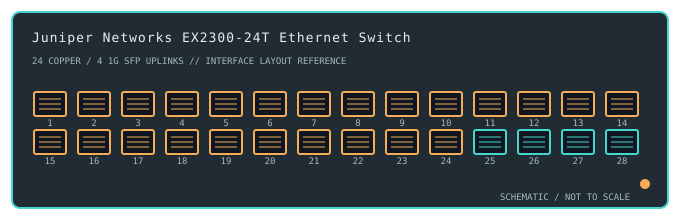

[ MODEL-SPECIFIC NETWORK HARDWARE ]
Juniper Networks EX2300-24T Ethernet Switch
A Junos-based enterprise access switch with 24 Gigabit copper interfaces and four Gigabit SFP uplink ports.

IDENTIFICATION: Confirm the complete product label and hardware revision before applying power, firmware or transceiver assumptions. Link and fabric rates below are nominal vendor specifications, not test results.
Detailed specifications and compatibility
| Subcategory | Managed switches |
|---|---|
| Exact product and model | Juniper Networks EX2300-24T Ethernet Switch |
| Ports / physical interface | 24 × 10/100/1000BASE-T RJ-45 access ports plus 4 × 1GbE SFP uplink ports. EX2300-24T is the non-PoE copper model. |
| Bus and host connection | 1U rack-mount fixed Ethernet switch, powered from AC mains. SFP slots provide 1GbE uplinks; use Juniper-supported transceivers and matching media. |
| Nominal switching performance | 56Gb/s switching capacity with a listed forwarding rate around 41.6Mpps for the 24T platform. Values are manufacturer specifications, not archive measurements. |
| Power over Ethernet | No PoE output on the EX2300-24T. EX2300-P models are separate PoE products. |
| Management and software | Junos OS provides enterprise Layer 2/Layer 3 switching and CLI/web management depending on release and licensing. Use model-specific Juniper software images, advisories and configuration documentation. |
| Power and physical form | AC-powered, actively cooled 1U rack unit. Confirm power cord/region, airflow and the specific unit's service status before deployment. |
| Compatibility | Attach standard Gigabit Ethernet endpoints on copper ports and supported 1GbE SFP optics on uplinks; 10G SFP+ modules are not the documented interface here. Maintain compatible Junos release and check transceiver support and licensing. |
| Variant identification | EX2300-24T is distinct from EX2300-24P PoE, EX2300-24T-DC and SFP uplink/port variants. Exact part suffix determines power supply, port mix and support lifecycle. |
| Measured throughput | No physical sample was benchmarked for this record. Nominal line rate and switching-fabric ratings are not measured application throughput. |
Revision-specific use notes
EX2300-24T is distinct from EX2300-24P PoE, EX2300-24T-DC and SFP uplink/port variants. Exact part suffix determines power supply, port mix and support lifecycle.
Attach standard Gigabit Ethernet endpoints on copper ports and supported 1GbE SFP optics on uplinks; 10G SFP+ modules are not the documented interface here. Maintain compatible Junos release and check transceiver support and licensing.
Junos OS provides enterprise Layer 2/Layer 3 switching and CLI/web management depending on release and licensing. Use model-specific Juniper software images, advisories and configuration documentation.
Archival, ESD and preservation notes
Record the full SKU and hardware revision, serial/date code, firmware release, supply label, installed transceiver identifiers and physical port test results. Keep configuration backups free of credentials and private network details.
Disconnect mains and attached PoE loads before service. Keep optics capped and store transceivers separately with their wavelength, fiber mode and part number recorded.
Manufacturer sources
- Juniper EX2300 support and software downloadsManufacturer product or model-specific technical documentation. Verify the exact SKU, hardware revision, region and firmware.
- IEEE 802.3 Ethernet standardsManufacturer product or model-specific technical documentation. Verify the exact SKU, hardware revision, region and firmware.
Confirm the source's revision/region applicability against the item label. Manufacturer link rates and capacity ratings are not measurements of application-level throughput.